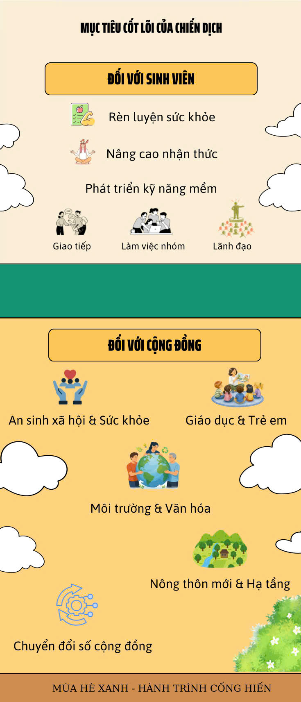
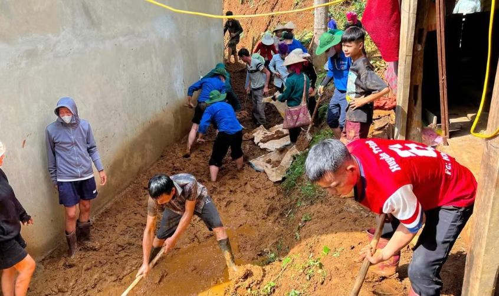
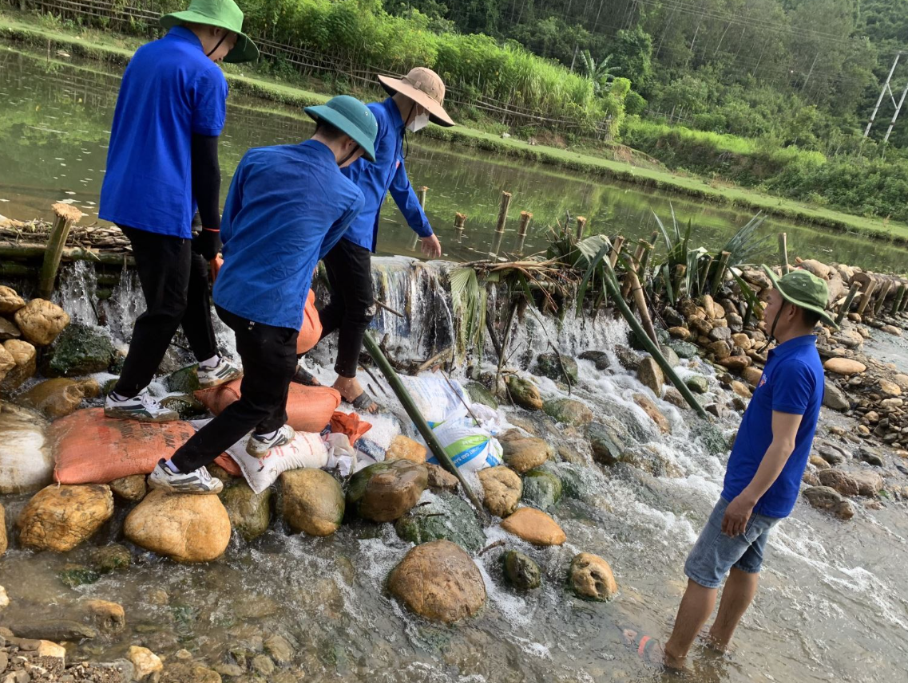

MỤC TIÊU & ĐỊA BÀN HOẠT ĐỘNG
Xác định rõ tôn chỉ, mục đích và không gian hoạt động nhằm phát huy hiệu quả cao nhất của nguồn lực thanh niên tình nguyện trong mùa hè năm nay.

Các Giá Trị Cốt Lõi & Mục Tiêu Chiến Dịch
Chiến dịch tình nguyện Mùa Hè Xanh được tổ chức nhằm hiện thực hóa sứ mệnh kép: vừa phụng sự xã hội vừa bồi dưỡng nhân cách và kỹ năng cho thế hệ trẻ.
Đối Với Sinh Viên Tình Nguyện
Rèn luyện bản lĩnh, kỹ năng sống và tinh thần trách nhiệm:
- Trải nghiệm thực tế môi trường sống và lao động tại các vùng quê, vùng sâu vùng xa để thấu hiểu và sẻ chia với nhân dân.
- Rèn luyện kỹ năng mềm quan trọng: làm việc nhóm, giao tiếp ứng xử, quản lý thời gian và giải quyết vấn đề thực tế.
- Nuôi dưỡng tinh thần dấn thân, tình yêu quê hương đất nước, lòng nhân ái và ý thức trách nhiệm công dân.
- Áp dụng kiến thức chuyên môn đã học trong nhà trường vào thực tiễn đời sống để cống hiến cho xã hội.
Đối Với Địa Phương & Cộng Đồng
Hỗ trợ phát triển kinh tế - xã hội, nâng cao chất lượng cuộc sống:
- Xây dựng, nâng cấp hệ thống hạ tầng nông thôn: làm đường bê tông, tu sửa cầu dân sinh, sửa chữa không gian văn hóa cộng đồng.
- Cải thiện điều kiện vệ sinh môi trường, tạo cảnh quan nông thôn xanh - sạch - đẹp, bảo vệ nguồn nước sinh hoạt.
- Chăm lo an sinh xã hội: thăm tặng quà gia đình chính sách, Mẹ Việt Nam Anh hùng, hộ nghèo và người có hoàn cảnh khó khăn.
- Nâng cao dân trí, mở các lớp ôn tập văn hóa hè, dạy bơi phòng chống đuối nước và kỹ năng sống an toàn cho trẻ em.
Ý Nghĩa Của Hoạt Động Mùa Hè Xanh
“Hoạt động Mùa hè xanh mang ý nghĩa cống hiến và trưởng thành: giúp sinh viên rèn luyện bản lĩnh, kỹ năng sống qua những trải nghiệm thực tế, đồng thời mang sức trẻ và tri thức đến hỗ trợ, cải thiện đời sống cho người dân ở các vùng khó khăn.”
Địa Bàn Hoạt Động Trọng Điểm
Chiến dịch Mùa hè xanh hướng trọng tâm về các địa bàn trọng yếu, nơi có nhu cầu cấp thiết về nhân lực và sự hỗ trợ phát triển:


5 Nhóm Địa Bàn Ưu Tiên Trong Chiến Dịch:
- Vùng sâu vùng xa: Các xã vùng sâu khó khăn về giao thông, cơ sở vật chất sinh hoạt còn thiếu thốn, cần nguồn lực trẻ hỗ trợ hoàn thiện hạ tầng và tổ chức đời sống tinh thần.
- Khu vực biên giới: Các địa bàn giáp ranh, đồn biên phòng và khu dân cư biên giới, nơi thanh niên tham gia xây dựng thế trận lòng dân, kết nghĩa cùng các chiến sĩ biên phòng.
- Vùng hải đảo: Địa bàn tiền tiêu của Tổ quốc, nơi sinh viên thực hiện các công trình thanh niên bảo vệ chủ quyền biển đảo, dọn sạch rác thải nhựa bãi biển và hỗ trợ ngư dân.
- Khu vực xây dựng nông thôn mới: Các huyện nông thôn đang trong lộ trình chuyển đổi và nâng cao chất lượng tiêu chí môi trường, chuyển đổi số và văn hóa cộng đồng.
- Vùng ngoại thành khó khăn: Các khu dân cư lao động nghèo, xóm trọ công nhân ở các quận/huyện ven đô, nơi cần mở các lớp học tình thương và điểm sinh hoạt hè cho con em người lao động.
Bảng Phân Phối Địa Bàn Dự Kiến Của Nhóm Thực Hiện:
| Khu vực | Loại địa bàn | Đội hình phụ trách | Mục tiêu trọng điểm |
|---|---|---|---|
| Huyện Cần Giờ | Vùng ven biển, rừng ngập mặn | Môi trường xanh | Trồng 1.000 cây mắm/đước, dọn rác bãi cát, tuyên truyền bảo vệ rừng phòng hộ. |
| Huyện Củ Chi | Nông thôn mới vùng sâu | Tiếp sức cộng đồng | Sơn sửa 5 căn nhà tình bạn, bê tông hóa 500m đường ngõ xóm, hỗ trợ Mẹ Việt Nam Anh hùng. |
| Huyện Bình Chánh | Ngoại thành tập trung khu nhà trọ | Vì trẻ em | Tổ chức 6 lớp ôn tập văn hóa hè, tặng 200 bộ sách giáo khoa và dạy kỹ năng chống tai nạn thương tích. |